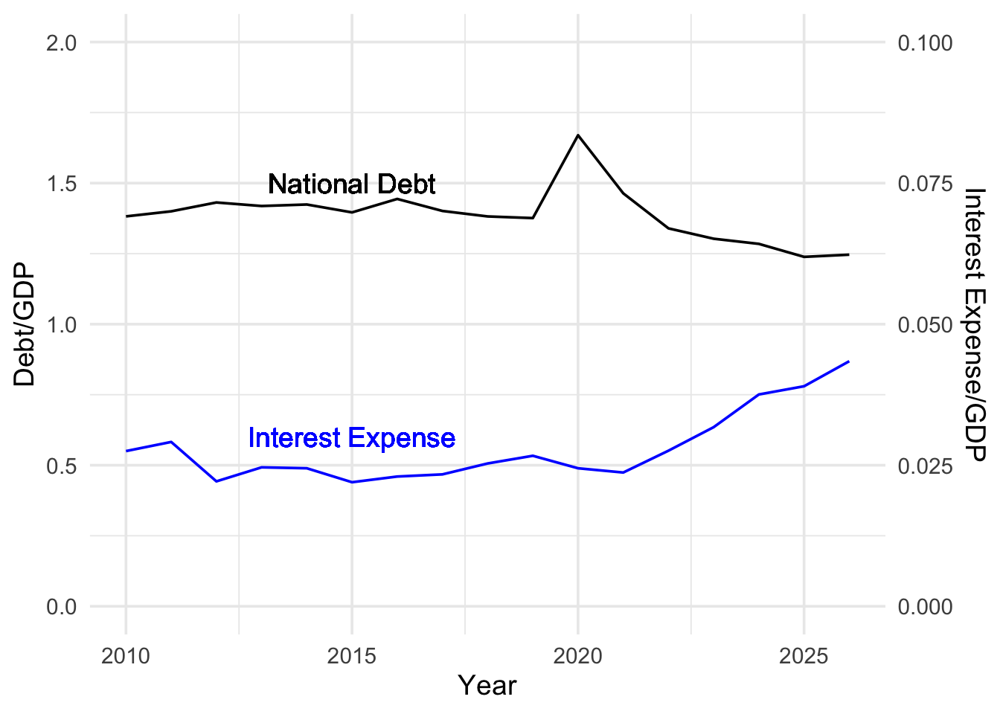
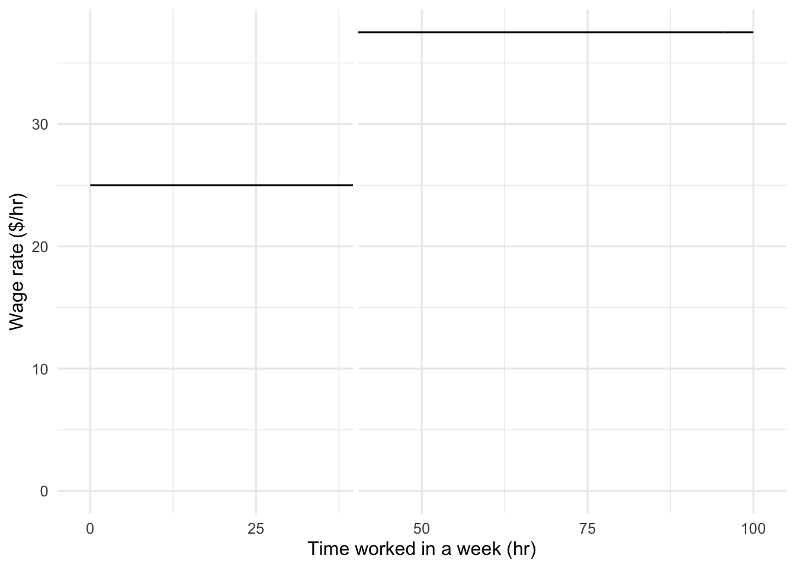
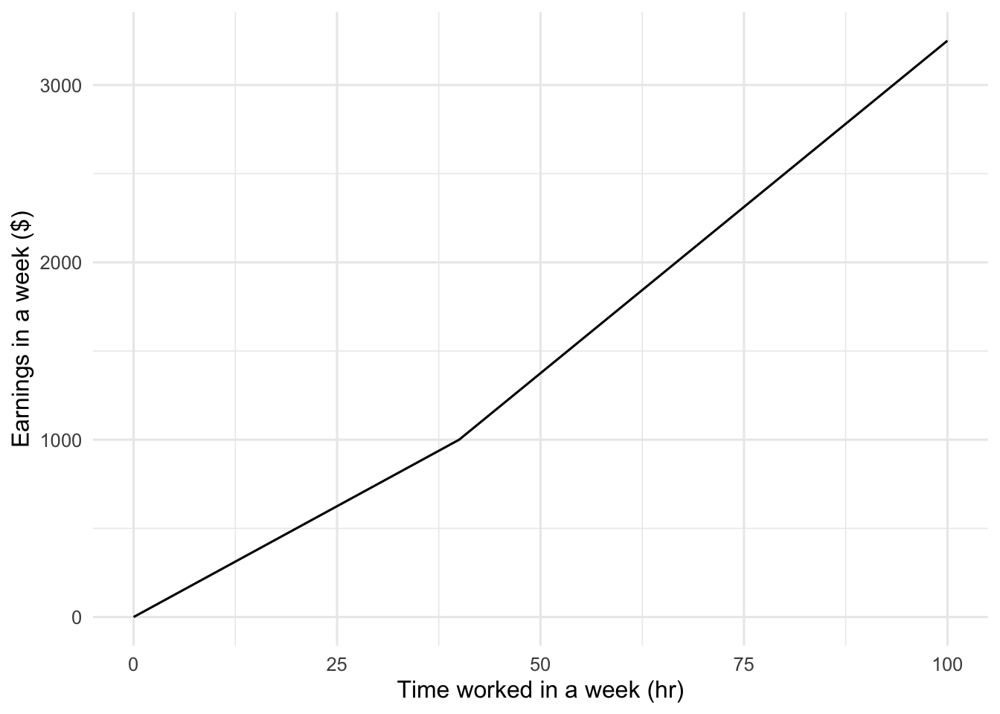

Chapter 04 Catalog
NoteGroup: AI-generated
File: Chap-04/sheep-feel-tv.qmd Status: null
Exercise 1 AI-generated question:
At a local cafe, you are deciding between two bags of coffee beans. Brand A costs $14.40 for a 12-ounce bag. Brand B costs $18.00 for a 16-ounce bag. Which brand offers the better value based on the unit price per ounce?
sft-1-qifl
Human comments:
A “unit price” of a product is the price per unit amount of the product. For coffee, the sensible unit for amount is ounces. For other substances, the unit might be stated in terms of mass or count, etc. “Unit price per ounce” sounds like a compound ratio: the unit priced divided by the number of ounces. This would double-count ounces. “Price per ounce” on its own says what they are looking for to measure value.
The last item in the multiple choice should not be ruled out. If you are only going to use 8 ounces before the coffee becomes stale, buy the cheaper bag. The problem statement nullifies this choice, since it says, “based on the unit price” with the unit defined as ounces, not bags. Responsible modelers check such assumptions to make sure they are aligned with the actual purpose of the model. A rule of thumb for consultants is to check first whether what the client says they want is really what they want.
NoteGroup: computer-skills
File: Chap-04/spider-forgive-pantry.qmd Status: draft
Exercise 2 One confusing aspect of the way interest rates are specified has to due with “compound interest.” Suppose you borrow $1000 on January 1 at an outrageously high interest rate of 10 percent/month. You are to pay back the loan, principal and interest, after six months. How much should you pay?
One approach is to multiply the interest rate by the duration of the loan. This gives 10 percent / month \(\times\) 6 months = 60 percent. According to this method, the payback amount is $1600, that is, the $1000 principal plus $600 in interest.
Another approach, called compound interest might interpret 10 percent per month in the following way: At the end of each month, that month’s interest is added to the principal. Each month, the principal is increased by 10 percent of the previous month’s principal.
| Date | Principal | increase from previous month |
|---|---|---|
| Jan 1 | $1000.00 | not applicable |
| Feb 1 | $1100.00 | $100.00 |
| Mar 1 | $1210.00 | $110.00 |
| Apr 1 | $1321.00 | $121.00 |
| May 1 | $1474.10 | $132.10 |
| June 1 | $1610.51 | $147.41 |
| July 1 | $1771.56 | $161.05 |
Calculations of this sort are hard to do in one’s head. Many consumers would be surprised to hear that six-months interest growth comes to $771.56 rather than $600.
There are good economic reasons to treat interest as compounding. But this means that a loan agreement should specify not just the initial principal ($1000) and the interest rate (10 percent per month), but also the method of compounding.
Here are three common methods. Make sure you know which one to apply when making or taking a loan!
- Simple interest: Final payment $1600.00
- Monthly compounding: Final payment $1771.56
- Annual compounding: Final payment $1483.24.
Some consumer-protection regimes require that interest rates be stated in a standard format which amounts to an annual rate compounded annually. This is called an “Annual Percentage Rate” (APR). An interest scheme which compounds 10 percent monthly has an APR of 2,138.43% per year, nothing near the 120% that intuition suggests. Perhaps you can see why 10 percent per month is an outrageous interest rate!
Maybe do some COMPUTER CALCULATIONS of APR. For instance, at 1 percent per month, there isn’t a huge difference between monthly rate and APR.
Following conventions is important when communicating quantitatively. APR is one such convention.
NoteGroup: discussion
File: Chap-04/duck-sleep-lamp.qmd Status: ready-to-go
Exercise 3 Perspectives on percent …
- The first thing to keep in mind is that percent is a unit of [1], written by moving the decimal point two places to the right.
- 0.0542 is 5.42%.
- 2.612 is 261.2%.
- 0.0005 is 0.05%.
You can write any number in units of percent. The advantage to doing so is that it converts numbers in the range 0.01 to 1 into the range 1 to 100. People can process such two-digit numbers like 56% faster and perhaps more reliably than numbers like 0.56.
- As a matter of practice, “percent” is also used to designating a proportion of some whole.
- If the whole is 100 miles … 12% corresponds to 12 miles.
- If the whole is 0.08 liters … 25% corresponds to 0.02 liters.
- If the whole is 4,000,000 USD … 50% corresponds to 2,000,000 USD
- If the whole is 3 kg … 400% corresponds to 12 kg.
In this context, the symbol “%” serves two purposes: to indicate that the decimal point has been moved two digits to the right; and, to replace the words “a fraction of,” or “a proportion of,” or “of the whole.”
- Example: “a fraction of 0.11 of 700 seconds is 77 seconds” can be replaced with “11% of 700 seconds.” Much shorter.
Percent is also sometimes used as a trick to fooling the reader into thinking a quantity is larger than it really is. For instance, 5 and 500% are the same quantity, but 500% has more digits and may look more imposing. Should this propaganda use be distained?
Percent is often used to signify a proportional amount of growth or decline. For example, a five-fold increase from 2 to 10 can be expressed as a growth of 400%. Why 400% and not 500%? That’s because the original value, 2 here, corresponds to 100% of itself. The end value, 10 in this example, is 500% of 2, so the amount of change is 500% - 100% = 400%. Another way to see this: the change from 2 to 10 involves an increase by 8. Since 8 is four times 2, we can say the increase by 8 is an increase by 400% of the starting value 2.
Likewise, an increase by 5% is the same as an increase to 105% of the original value.
Decreases are even more confusing. A decrease of 20% corresponds to a change to 80% of the original value.
Percentages, when used to signify “a proportion of,” do not add. For instance, starting at 100 USD, two successive increases of 20% (that is 20% then another 20% increase) leads to an overall increase of 44%.
“Percent” and “percentage points” are not the same thing. Use “percentage point” only when referring to a change in a proportion. For instance, if inflation is at 5% and then changes to 7%, we have an increase by 40% in inflation or, stated differently, an increase by 2 percentage points.
When you encounter percent or “percentage points,” make sure you understand whether they are talking about a the “proportion of something,” a “percentage increase,” a “percentage point increase.” If it is a change—increase or decrease—you should be aware of what the starting level of the quantity was.
To illustrate how one might be mislead by percent and percentage points, consider this statement from an AI:
Cigarette smokers face significantly higher mortality risks than non-smokers, with studies showing smokers are about twice as likely to die prematurely, experiencing higher rates of lung cancer, heart disease, and respiratory illnesses; for example, one study found current smokers had an overall mortality rate of around 11 per 1,000 person-years, compared to about 3 per 1,000 for never smokers, with risks increasing with the amount and duration of smoking.
Cigarette smokers have a 100% greater risk of premature death. dsl-1-72kd
Would (1), if true, mean that smokers are certain to die prematurely? dsl-2-72kd
The mortality rate of cigarette smokers is 267% greater than for non-smokers. dsl-3-gsd
Does (3), if true, mean that cigarette smokers have a mortality rate greater than 100%? (Cats, with their proverbial nine lives, might get away with this, but not people.) dsl-4-hwdw
The mortality rate of smokers is 0.8 percentage points higher than for non-smokers.
- Does (5), if true, mean that smoking is not a big deal? Explain why or why not.
File: Chap-04/panda-draw-shirt.qmd
Exercise 4 The US government debt (usually called the “National Debt”) is approximately $40 trillion as of early 2026. Written out, that’s $40,000,000,000,000. Or, $4e13.
The “gross domestic product” (GDP) of the US is about $30 trillion per year. The per-year is important. It’s the same quantity as $2.5 trillion per month, or $1 million per second, or $3000 trillion per century.
Economic journalists often describe the debt condition of a country as ratio of debt to GDP. For instance, looking at the amounts $40 and $30 trillion, they would measure the US debt is 125% of GDP. A journalist’s rule of thumb is that ratios above 100% are a sign of trouble.
- What is the dimension of the quantity Debt/GDP?
pds-1-dimension
Comparing GDP (dimension W T-1) with government debt (dimension W) makes sense only if we are interested in extracting the T component. The journalists’ ratio of “125%” should really be stated as 1.25 years.
It is unclear what fundamental justification there is for treating a ratio of 1 year as the threshold for concern. Among other things, there are many other forms of debt: state and local government debt ($4 trillion in 2026), corporate debt ($16 trillion in 2026), and consumer debt ($18 trillion in 2026), which are not captured in the national debt figure. Add to this about $5 trillion in unfunded liabilities for state and local public pensions, $8 trillion for Federal civil and military pensions, and $25 trillion in the net present value of unfunded Social Security benefits. These figures total $76 trillion, about double the so-called “national debt.”
More fundamentally, the Dept/GDP ratio says little about how expensive the debt is, that is, how much it costs to service the debt each year. UNRESOLVED fig-pds-23s shows a fairly stable pattern of Dept/GDP over the last 15 years (excluding the 2020 spike in the COVID-19 pandemic). But the interest-expense/GDP ratio shows substantial changes over the last five years.
Rows: 17 Columns: 5
── Column specification ────────────────────────────────────────────────────────
Delimiter: ","
dbl (5): InterestExpense, AvgRate, FY, Debt, GDP
ℹ Use `spec()` to retrieve the full column specification for this data.
ℹ Specify the column types or set `show_col_types = FALSE` to quiet this message.Warning in geom_text(aes(label = "Interest Expense", y = 0.6, x = 2015), : All aesthetics have length 1, but the data has 17 rows.
ℹ Please consider using `annotate()` or provide this layer with data containing
a single row.Warning in geom_text(aes(label = "National Debt", y = 1.5, x = 2015)): All aesthetics have length 1, but the data has 17 rows.
ℹ Please consider using `annotate()` or provide this layer with data containing
a single row.
NoteGroup: drill
File: Chap-04/aspen-let-shelf.qmd
Exercise 5 AI Generated Exercise: The Freelance Consultant’s Dilemma
Scenario: Lydia is a freelance graphic designer who is trying to determine her “Productivity Rate” to better quote future clients. Last week, she spent 15 hours designing a 60-page annual report for a local non-profit. This week, she spent 12 hours creating a 40-page brand style guide for a startup.
The Question: Which of the following statements correctly compares Lydia’s rates of production between the two projects?
als-1-krfis
Note from human: This is the kind of problem familiar from textbooks where knowing what chapter the question refers to tells the student the kind of answer that is expected. This chapter is about “rates,” so rates must be part of the answer! A more authentic question might leave it to the student to decide whether a rate provides a good approach. For instance, if the length of the report were irrelevant, the overall time spent might be the correct measure of productivity (or, rather, “unproductivity.”). Page count is easy to measure, but not clearly related to the purpose at hand. Often, a high page count is a mechanism to hide information.
President Woodrow Wilson (1856-1924) is reported to have said, “If I am to speak ten minutes, I need a week for preparation; if fifteen minutes, three days; if half an hour, two days; if an hour, I am ready now.”
File: Chap-04/panda-refer-window.qmd
Exercise 6 There are several ways to measure transportation services. Let’s focus here on the transportation of people. The distance of transport is, obviously, an important aspect of transportation services. So it the number of people transported.
In a proper measure of transportation services, it seems reasonable that the longer the distance, the more transportation being provided, so long as the number of passengers is the same. Similarly, the more passengers carried, so long as the distance is the same, the more transportation is provided.
- Which of the following is a sensible way to measure the amount of transportation?
prw-base-wlci
- 100 passengers are on a flight covering 500 miles. How much transportation service is provided to the group of passengers?
prw-2-cksd
Many people are concerned with the amount of fuel used in air travel. For modern jets (with a full load of passengers), the amount of fuel used is approximately 0.02 to 0.03 gallons per passenger mile.
- What is the dimension of “gallons per passenger mile?”
prw-3-kdlw
- People in the US are used to measuring fuel economy in “miles per gallon.” This contrasts with the style in much of the rest of the world the unit is “liters per 100 km.” Assume that a group of friends is travelling 600 miles to a concert. They could fly or drive. If there are three friends, how many gallons of fuel will the one-way air travel consume (for these three passengers)? (Pick the closest answer.)
prw-4-cksd
- Now imagine the three friends are carpooling to the concert in a car that gets 30 miles per gallon. How many gallons of fuel will the one-way drive consume for all three passengers. (Pick the closest answer.)
prw-5-wels
- Some people reason that it does not consume any fuel for the three friends to fly, since even if they didn’t fly the plane would consume the same amount of fuel. Are you sympathetic to this argument? Explain why or why not.
File: Chap-04/reptile-speak-piano.qmd
Exercise 7 Consider a bicyclist pedalling along a straight road. There are distance markers every tenth of a mile, so the cyclist can note her position easily.
- What is the dimension of the biker’s position along the road?
rsp-7cks-1
- What is the dimension of speed along the road?
rsp-7cks-2
- Is speed a simple or compound ratio?
rsp-7cks-3
- Speed is a rate of change. Explain why?
rsp-7cks-4
The bicyclist has just crested a hill and is not speeding up. While speed tells how position changes with respect to time, “speeding up” is a synonym for acceleration.
- Which of these corresponds to acceleration?
rsp-7cks-5
- What is the dimension of a change in position?
rsp-7cks-6
- What is the dimension of a change in speed?
rsp-7cks-7
- What is the dimension of a change in speed with respect to a change in time?
rsp-7cks-8
File: Chap-04/rhinosaurus-shut-fork.qmd
Exercise 8 As you know, “mortality” refers to the state of being subject to death as in, “All men are mortal.” In contrast, “mortality rate” refers to the frequency of death in a given population or group over a specified period of time.
Notice the three words: “frequency,” “given,” and “over.”
Frequency on its own is ambiguous. With respect to mortality, it can mean any of three things; the number of deaths, the proportion of the population that dies, or (less commonly) the number of deaths during a time interval.
- What is the dimension of the number of deaths?
rsf-ckse-1
- What is the dimension of the proportion of the population that dies?
rsf-ckse-2
- What is the dimension of the number of deaths per unit time?
rsf-ckse-3
- Perhaps the most widely used form for “mortality rate” is the proportion of people dying in a given group per unit time. What is the dimension of this quantity?
rsf-ckse-4
- According to the answer to (4), which one of the following could be an appropriate unit for mortality rate?
rsf-ckse-5
- The correct answer to (5) can be confusing to many people because “per year” is familiar only in the context “something per year.” It’s common when discussing mortality rates to substitute “percent” in place of the “something,” as in “percent per year.” What is the dimension of percent?
rsf-ckse-6
NoteGroup: exercise
File: Chap-04/falcon-iron-pants.qmd
Exercise 9 Thanksgiving chefs can easily find recommendations for roasting turkey. On source suggests 13-15 min/lb at a temperature of 325-350°F. Another source recommends 15-20 min/lb at a temperature of 325°F.
- Explain why it’s sensible to convey the cooking time using a rate, rather than just saying how long to cook the bird.
- Of course, there are other rates that can be constructed: cooking time with respect to …. For instance, cooking time depends on temperature. Would it make sense to have a rate like 0.5 min / °F? Explain how this might help or whether it makes any sense at all.
Back to cooking time versus weight …
Once source gives a handy table for cooking at 325°F:
- 10 pounds: cook 165 min
- 15 pounds: cook 210 min
- 18 pounds: cook 240 min
- 21 pounds: cook 270 min
- Between 10 and 15 pound turkeys, what is the rate of change in cooking time with respect to weight?
fip-3-w4s
- Between 10 and 15 pound turkeys, what is the rate of change in cooking time with respect to weight?
fip-4-flw
File: Chap-04/finger-dig-fridge.qmd
Exercise 10 Sometimes two rates with different dimensions are in use to describe the same phenomenon. This can lead to confusion and conflicts with intuition. For example, miles per gallon (MPG) and liters per 100 kilometers (L/100km) both measure fuel efficiency, but they behave differently when comparing improvements.
MPG is said to measure “fuel economy” whereas L/100km measures “fuel efficiency,” but it’s easy to confuse these two, similar-sounding phrases.
With fuel efficiency, a change from 6 L/100km to 5 L/100km represents an improvement. It reduces gas consumption by the same amount as a change from 5 L/100km to 4 L/100km.
Is the same true for “fuel economy?” Does a change from 10 to 20 mpg correspond to the same savings as increasing it from 30 to 40 mpg? Explain your reasoning.
File: Chap-04/ant-spend-shoe.qmd
Exercise 11 A car typically has instruments to measure:
- speed (speedometer)
- mileage (odometer)
- fuel level
Fancier cars also show:
- instantaneous (second-by-second) fuel economy (usually a menu item in the display)
- tire pressure
For each of these, say whether it is a rate, a rate of change, or something else. And, for each, give a very brief explanation of your answer.
NoteGroup: fragment
File: Chap-04/ash-ride-window.qmd Status: oddity
Exercise 12 Another simple value statement compares flights. Suppose location C is twice as far as B from A. The cost of providing the service A -> C will be higher. Common intuition often suggests that the ticket price for the A -> C flight will be about twice that of B -> A.
NoteGroup: unclassified
File: Chap-04/avoid-send-painting.qmd Status: sketch
Exercise 13 dollars per square foot
payment per money in account
flow versus rate of flow: water volume per minute moved by a pump (Compound: water flow per minute)
economic product per person (Compound: economic product per person per day)
miles per gallon (Compound: ton miles per gallon(truck) or passenger miles per gallon (car or plane).
File: Chap-04/bat-meet-mattress.qmd
Exercise 14 Sometimes the dimension of a quantity points to an unexpected way to interpret that quantity. Consider, for example, energy utilization of walking rate 80 Cal per mile. The dimension of 80 Cal is [energy]. The dimension of mile is [L].
- Which of these is equivalent to [energy]
bmm-1-t37s
- What is the dimension of the rate 80 Cal per mile?
bmm-2-t37s
- Briefly state your opinion of whether the (correct) answer to 2 is consistent with your intuition of what energy per mile means. `r devoirs_text(“bmm-3-t37s”, )
File: Chap-04/beech-put-knife.qmd
Exercise 15 Housing in New York City is famously unaffordable. Civic leaders argue that the solution to the unaffordability “crisis” is to build new housing.
As of 2025, New York City has an “ambitious” plan to add 50,000 new housing units each year. There are currently about 3,750,000 units in the city. The example about new housing in the text suggests that existing stock falls by about 1% per year and that the number of households in the US is increasing by about 1% per year. Use these numbers to calculate whether 50,000 new units per year will solve the housing shortage.
File: Chap-04/kid-sail-sofa.qmd Status: sketch
Exercise 16 SIMPLE EXERCISE RELATING to the walking examples.
Taking into account that a person uses about 2000 Cal in an ordinary day’s activities, the excess energy available for the marathon is only 1000 Cal. That supports about 12.5 miles of walking.
File: Chap-04/seahorse-bathe-knife.qmd
Exercise 17 The following is from the Atlantic magazine article, “Science Is Winning the Tour de France” (by Matt Seaton, July 25, 2025)
The gold standard of cycling performance—which boils down to a rider’s ability to push against the wind and go uphill fast—is a high power-to-weight ratio, given in watts per kilogram. The benchmark figure is how many watts per kilo a cyclist can sustain for a one-hour effort. Every rider now has a power meter fitted to their bike, so they know their numbers in a constant, real-time way (together with heart rate, speed, and other measurements).
The article describes the then-current leader in the Tour de France as having a power-to-weight ratio of seven watts per kilogram.
- If this rider weighs 70 kg, how many watts can he generate?
sbk-1-vsw
- Look up the conversion factor from watts to horsepower. How many horsepower is the rider generating?
sbk-2-ie2d
- A horse weighing 500 kg can generate one horsepower while walking. How does the horse’s power efficiency per weight compare to the champion bike rider.
sbk-3-r7f
- There is no conversion factor from watts to calories. Why not?
sbk-4-ri3
- Look up the conversion factor from watt-seconds to kilo-calories (kcal (or “Cal”), the relevant unit when looking at diet). How many kcal does the rider produce when biking for one hour at 7 w/kg?
sbk-5-nsl2
1 watt-second is 0.000239006 kcal. In an hour, the rider generates 3600 s times 70 kg times 7 w/kg = 422 kcal
- It’s estimated that a person’s efficiency when converting dietary calories to work/movement calories is about 25%. In an hour of biking at 7 w/kg, how many dietary calories does a 70-kg rider consume?
sbk-6-fjfk
- An “average” adult walking at 2.5 mi/hr is said to use about 150 watts of power. For this hypothetical adult, how much energy is consumed in a 1-hour walk?
sbk-7-fjfk
- In the exercise/diet literature it’s said that walking a mile consumes about 100 kcal.
This is (roughly) consistent with the 150 watts of power claimed when waking at 2.5 mi/hr.
File: Chap-04/spider-stand-ship.qmd
Exercise 18 Accounting professionals have a busy quarter year connected to the end of each fiscal year up through the deadline for filing taxes. Large accounting firms typically bring on extra workforce during this period, and recruit college students to work long hours over a couple of months. One recent graduate told me she was paid $25/hr for such work. But, by US Federal law, the wage rate is increased by 150% for any hours worked over 40 per week. (This is called, “time and a half for overtime.”) The graduate reported working sometimes 90 hours per week.
Consider these two functions where the input is the number of hours accumulated during a week.


- What is the wage rate at 75 hours? (pick the closest)
- What is the total earnings (in dollars) at 75 hours? (pick the closest)
The two functions in UNRESOLVED fig-sss-wage-overtime are closely related. But their outputs have different dimensions.
- What’s the dimension of the output of the earnings function?
- Consider the rate of change of earnings with respect to hours worked. What is the dimension of this rate of change?
- The rate of change of a function’s output with respect to its input is, graphically, the slope of the function’s graph. Often, this rate of change is different at different input values. Is that the case for the rate of change of earnings with respect to hours worked?
sss-5-kes
- One of these statements is true, the others are false. Which one is true?
sss-6t43w